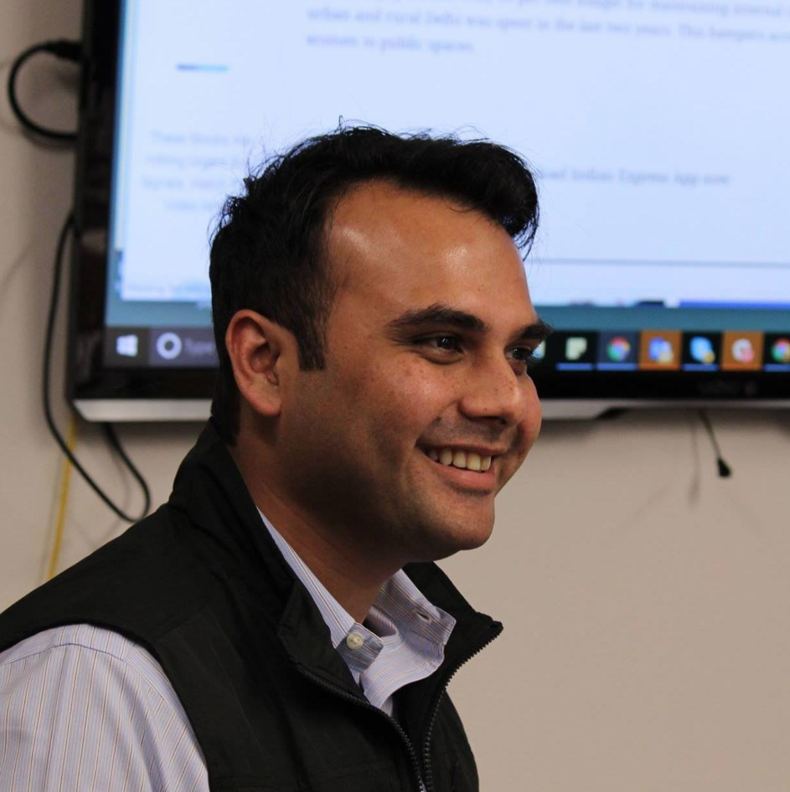

- CONTENT
- Introduction
- Examples
- Contributors

CMS for micro-sites
Use Proto Platform to launch verticals around themes with aggregation, curation and originals.

Introduction
Launch micro-sites around themes using aggregation, curation and originals. This will allow you to build a body of work (and thus credibility) around specific themes that your readers care about. Publishers are using Verticals as a sandbox environment to try out new themes.
Reach out to Sara Olstad (solstad@icfj.org) if you are interested in accessing this tool.
Examples
Contributors
Fellow (Strategist)
ICFJ Knight Fellow

ICFJ Knight Fellow
ICFJ Knight Fellow
ICFJ Knight Fellow

ICFJ Knight Fellow

ICFJ Knight Fellow